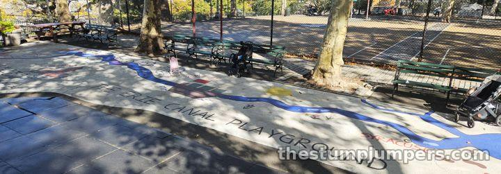
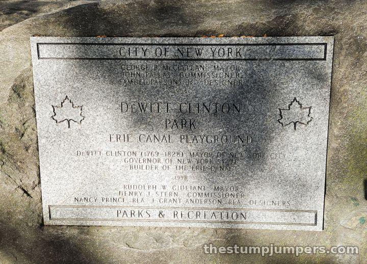
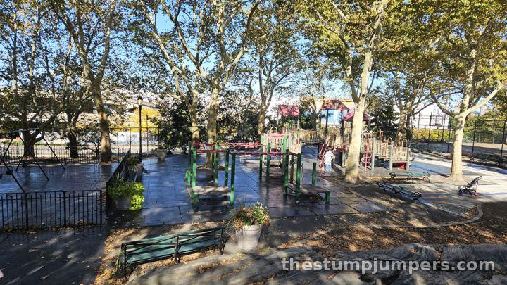
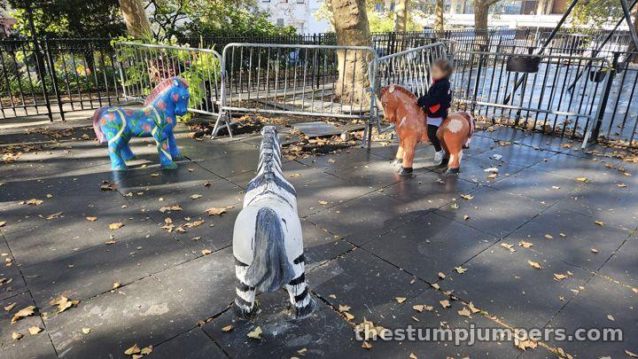
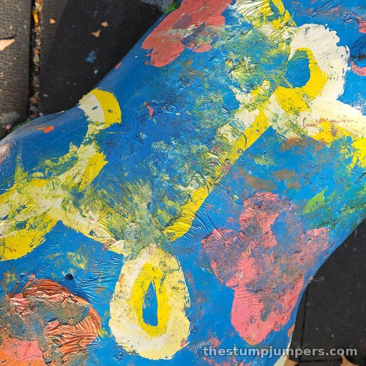
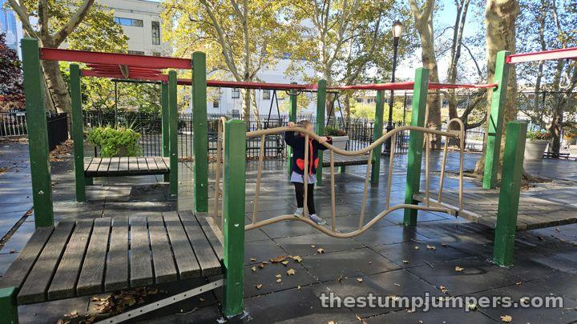
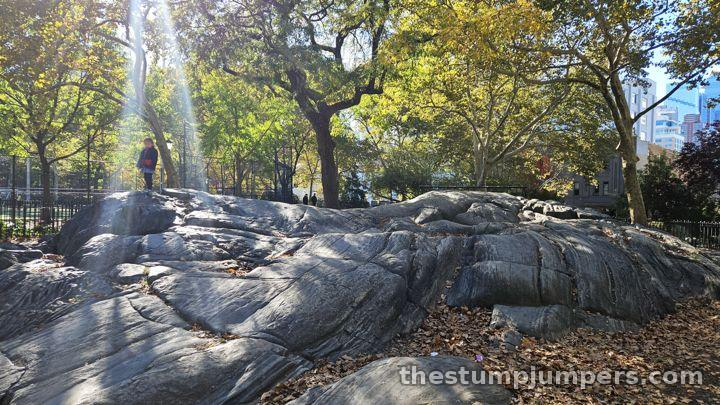
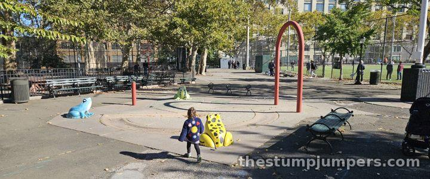
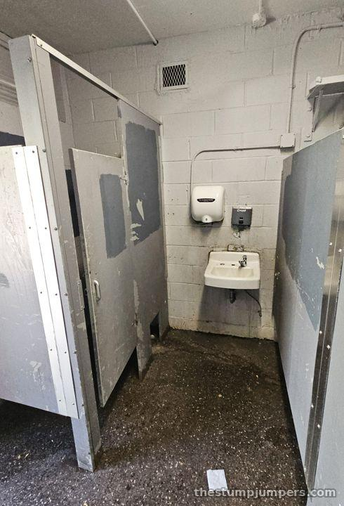
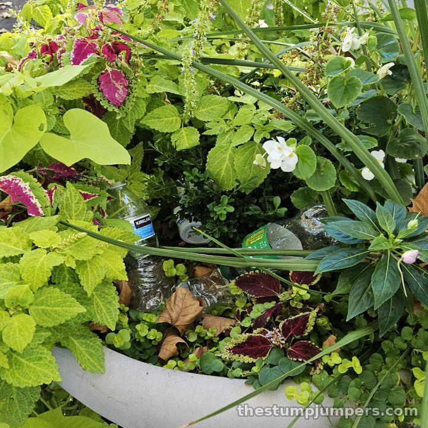

Erie Canal Playground: The Knock-Off River Run

First, the names. The park is DeWitt Clinton Park, on the far West Side of Hell’s Kitchen, and the playground inside it has its own name: The Erie Canal Playground. The Erie Canal was Mayor/Governor DeWitt Clinton’s magnum opus. The mules (not horses) are a canal reference, since mules towed the barges. But apart from three mules and a painted canal route on the ground, there’s really nothing canal-y about this playground. Don’t expect it to be like River Run – it only has a painted stream, instead of a real one.


The park even had a shot at naming the whole neighborhood: there was a push to rename Hell’s Kitchen “Clinton” after it, which never fully stuck, maybe because the park was so nasty back then. For decades it was notorious for being a late-night pickup spot for mixed-gendered people of the night, with drivers pulling in straight off the West Side Highway. It’s a very large park in a commercial part of town, so of course stuff went down here. These days it isn’t all that seedy anymore. People (with kids) are moving into the nice new condos overlooking the Hudson, and plenty of them use this as their neighborhood playground.
And now for the important part, the playground:
Surrounded by London plane trees on a rocky hill, with partial Hudson River and Midtown views, it’s actually kind of nice for a playground in a park with this kind of history.

It was built in 1996, and it’s held up… mediocrely. There are a couple of sinkholes with barricades around them. The original paint is gone or faded, with very poorly done layers of paint slathered on top. The sad mules got the same treatment, and they look sticky. Put your kid on them at your own risk; they may not unstick.


The rubber floor pads are so slick that kids are always slipping and sliding. It makes for an interesting game of tag, and since they’re rubber, falling isn’t all that dangerous, but be warned.

The rock outcrop is a lot of fun, like a mini Umpire Rock at Heckscher. It’s real rock, but it’s been skim-coated in concrete, probably to smooth out the rough or crumbly parts, so it looks just a little off. That’s why we call it the sus rock. No broken glass to be found, so it’s good fun.

I love the metal track ride. I hadn’t seen one in years, and it was my favorite part of my playground as a kid. It might just date the place, but it’s a pretty unique feature, and I had fun on it. As kids we used to purposely crash into people with it. We called it the Crash ’n’ Burn. I was such a jerk...
The actual splash pad is outside the playground, near the bathrooms. There’s usually a lot of riffraff around it from the basketball court and playing fields, so it’s probably best avoided. The fields get very rowdy with adults; expect the kind of soccer game with cases of beer lined up along the fence.

There are public restrooms right outside the playground doors, but they’re some of the scuzziest I’ve ever seen.


Verdict: worth a stop if you’re in the area, or you need a track ride, or you want to get stuck to a mule. We biked here on the Stumpjumper; it’s just across 12th Avenue from the Hudson River Greenway and right near the new Pier 97, which makes for an interesting old-vs-new comparison.
The Stump Report
Biking & Running There
By bike: that's how we came, on the Stumpjumper. It's just across 12th Avenue from the Hudson River Greenway, near Pier 97. On the run: an easy detour off the Greenway. By train: C or E to 50 St, then walk west to 11th Ave.